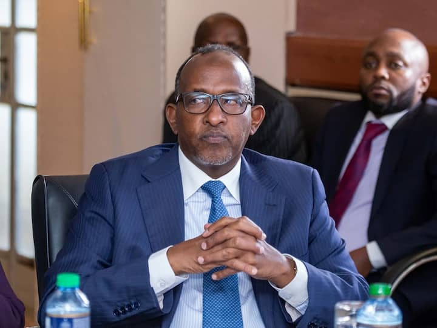
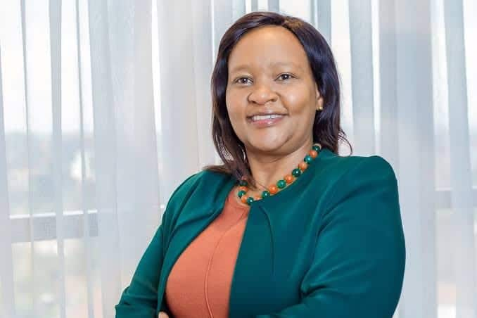
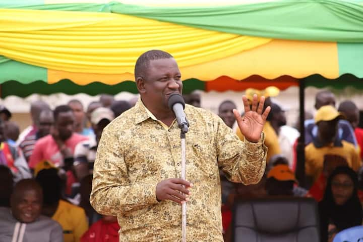
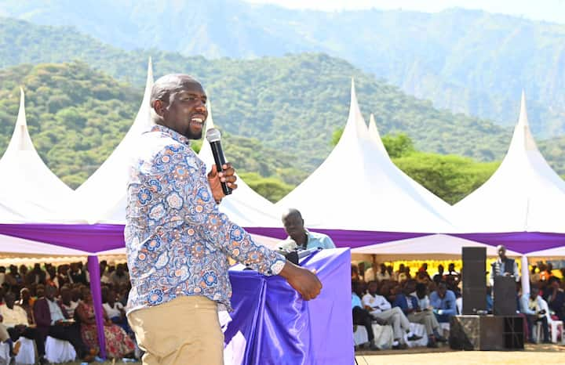

Adan Duale
Ministry : Defence
- Former MP - Garisaa Townshi
- Served as leader of majority
of NA from 2013-2020

Rebbeca Miano
Ministry : East African Community
- she is a kenyan Lawyer
- Former Director and CEO
of KenGen
Alfred Mutua
Ministry : Foreign Affairs
Former Gorvernor of Machakos
county 2013-2022
Former Gorrvernment spokesman
Susan Wafula
Ministry : Health
- Diploma in Pharmacy (KMTC)
- Diploma in Healthcare Management
(JKUAT)
Kithure Kindiki
Ministry : Interior security
- A kenyan Lawyer
- Politician
Aisha Jumwa
Ministry : Public service
- Former Malindi constituency
Legislator
- Kenyan Politician
Moses Kuria
Ministry : Trade
Former MP Gatundu South
2013 -2022
A politcian and political anlyst
Roselinda Soipan
Ministry : Environment $ Forestry
- FIrst Maasai Woman Cabinet
secretary
- An Astitute Kenyan politician

Salim Mruvya
Ministry : Mining
- Former Gorvernor Kwale
County
-
An Astitute Kenyan Politician
Florence Bore
Ministry : Labour
Director of the Geothermal Development
Company
Former MP Kericho Constituency
Alice Wahome
Ministry : Water
- Kenyan politician and lawyer
- Former MP Kandara Constituency

Kipchumba Murokomen
Ministry : Transport
- Kenyan politician and lawyer
- Former Elgeyo Marakwet senator